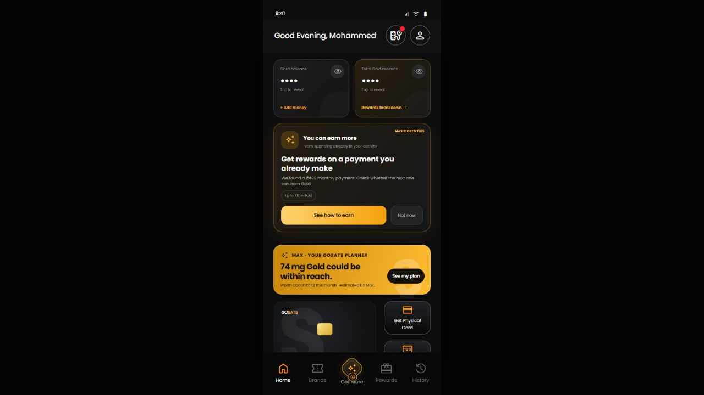
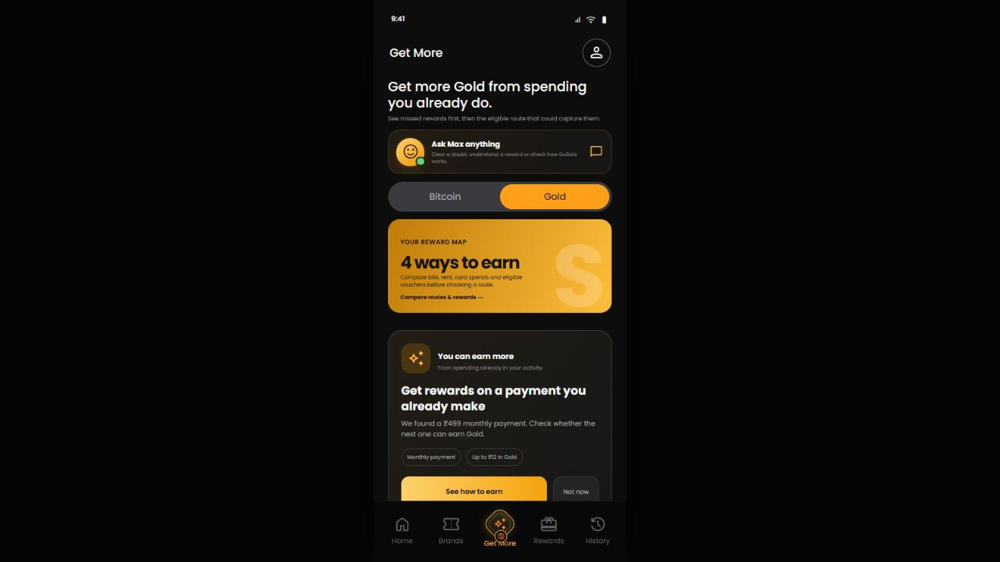
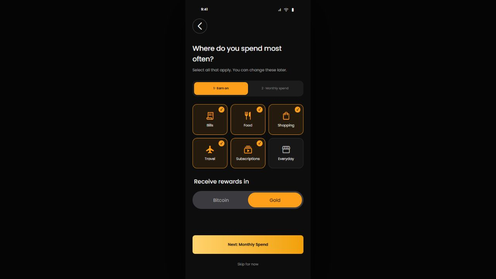
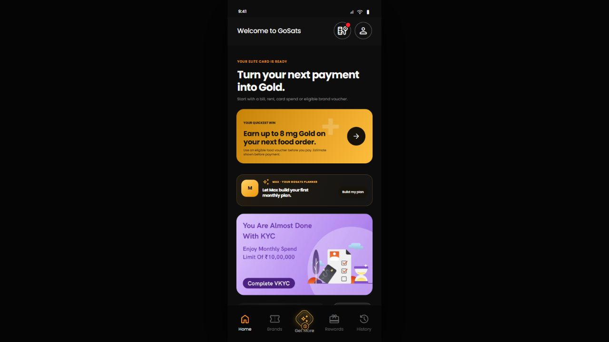
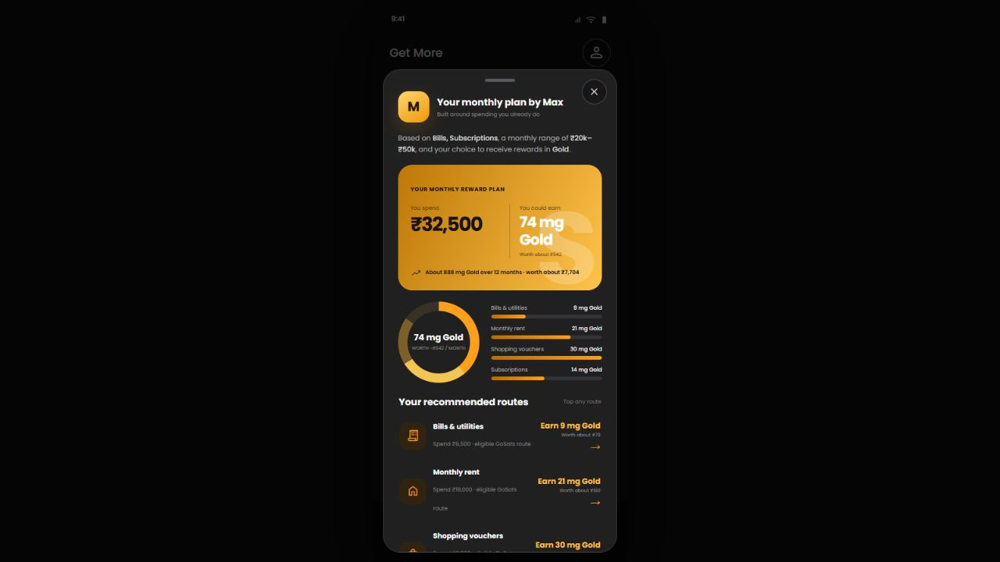
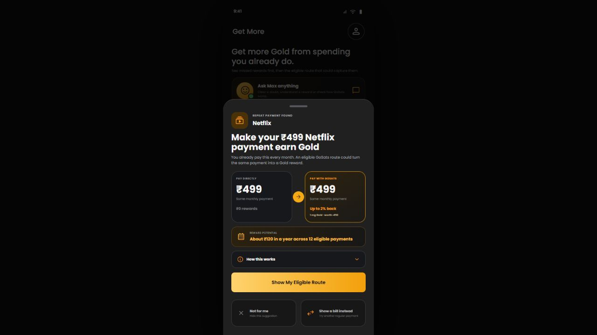
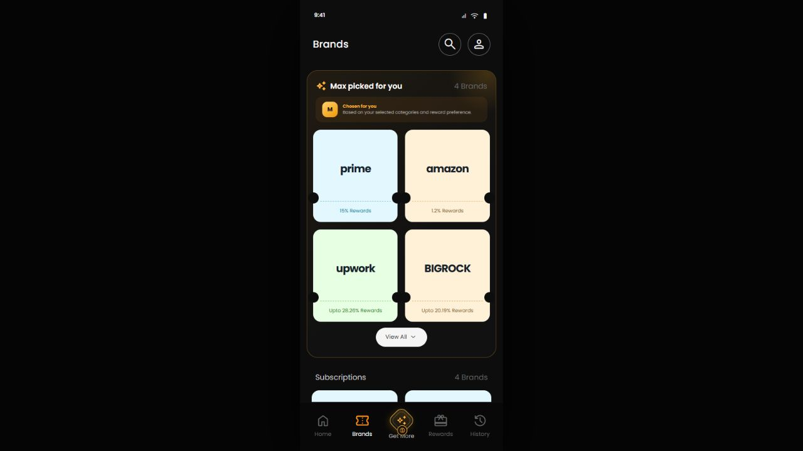
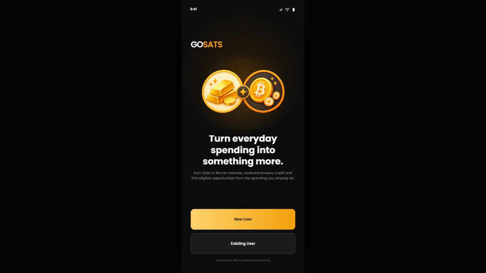

Cold start. No urgency. No transaction context. The user must trust a new shopping assistant before seeing any benefit.
01 / 14
GOSATS
AI-native product redesign
Make the next reward impossible to miss.
GoSats already turns spending into Gold or Bitcoin. The redesign makes every user understand where they can earn more, why it applies, and what to do next.
User motiveGet more cashback from money already being spent.
Product responseA visible “Get More” path, not a hidden recommendation layer.
AI’s jobFind, rank, quantify and explain, not invent a purchase.
Prepared by Sufiyan for Mohammed Roshan - Gosats


GOSATS
02 / 14
The human truth
People install a reward app for one reason: “How do I get more back?”
1
The reward-seeking instinct, lalach, is the growth loop. The responsible design move is to make the value concrete before asking for action.
1
We placed “Get More” at the centre of navigation.
The most commercially valuable user intent is now always one tap away, not buried inside Brands or Rewards.
2
We did not optimise for more spending.
We optimise for capturing rewards on spending the user already plans to do, and show eligibility before payment.
3
The promise becomes measurable.
Every opportunity should answer: “Spend how much, through which route, and receive what?”
GOSATS
03 / 14
The failed RAG agent changed the wrong behaviour
It asked users to start a shopping journey. GoSats is strongest after the intent to spend already exists.
The evidence comes first: a known bill, repeat payment, voucher category or card transaction.
Existing behaviourBill, rent, voucher, card spend or repeat payment.
→Relevant opportunityDetect and rank only routes GoSats can actually serve.
→Action with proofShow the amount, expected reward and final confirmation.
The learningAI should reduce the distance between an existing payment and an eligible reward.
It should not manufacture intent, recommend what to buy, or behave like an investment advisor.
Wrong jobShopping discovery
Low-frequency and solved elsewhere.
Trust gapAdvice before evidence
No prior success for the agent to lean on.
Better wedgeMissed reward recovery
Immediate value tied to observed behaviour.
GOSATS
04 / 14
Where intelligence belongs
AI decides relevance. Rules decide money. Infrastructure decides what is possible.
Product question
AI
Rules
Infrastructure
What should appear first?
Classify narration, infer category, rank opportunities.
Suppress ineligible or previously dismissed routes.
Transaction/activity feeds and user preferences.
What will the user earn?
Explain the result in plain language.
Eligible amount × applicable rate; caps and exclusions.
Current reward catalogue and partner availability.
Can the action complete?
Guide the user to the right route.
Require confirmation; never auto-spend.
BBPS, voucher partner, card rail or approved payment path.
What we addedIntelligence inside Home, Get More, Brands, Rewards and History.
No separate “AI product” for the user to learn.
WhyThe benefit is the better decision, not the presence of AI.
The interface speaks in rewards, routes and eligibility.
User expectationIf a number is shown, it must be explainable and actionable.
Estimated is labelled. Final reward appears before payment.
What the AI layer addsFive product jobs, embedded across GoSats.
01 · DetectFind repeat spend and uncaptured reward opportunities.
02 · RankChoose the most relevant eligible next action.
03 · PlanCombine routes into a monthly Gold or Bitcoin plan.
04 · ExplainTranslate rules into clear spend-and-earn outcomes.
05 · LearnUse preferences, dismissals and corrections to rerank.
GOSATS
05 / 14
Cold-start design
Before history exists, ask only enough to make the first Home screen useful.

121
Multiple categories, because real spending is not a single persona.
Bills, Food, Shopping, Travel and Subscriptions can all be selected. We use these as relevance signals, not as a visible “cohort” label.
2
Gold or Bitcoin is a product preference, not an investment recommendation.
The same routes and plan are expressed in the asset the user has chosen.
3
A broad monthly range is enough.
We need an estimate to size the plan; we do not need Account Aggregator consent during onboarding.
Immediate payoffThe next screen must visibly reflect the answers.
Food + Shopping + Gold should change the first action, selected brands and every reward estimate the user sees.
GOSATS
06 / 14
Home state 01 · no reward history
A new user has ₹0 rewards. Home must sell the first win, not report an empty balance.

1231
Quickest win: one action, one reward.
“Earn up to 8 mg Gold on your next food order” is more useful than “Explore rewards.” It states the value and route.
2
Max is a compact invitation, not the whole page.
The plan sits between the first action and KYC so it adds depth without delaying the first win.
3
KYC remains visible because it blocks card value.
The full banner appears while in view; a small video icon persists across tabs only when KYC is pending.
Design consequenceOnboarding choices change the UI silently.
The user sees a personalised GoSats, not a message saying “you belong to cohort B.”
GOSATS
07 / 14
Home state 02 · activity exists
An existing user needs proof of value, then a better route for the next payment.
123
1
Balance and rewards share the first row.
Both stay masked until tapped. Rewards are shown in Gold or Sats, with INR only as supporting worth.
2
“You can earn more” is grounded in activity.
A ₹499 repeat payment is specific enough to feel relevant, but still asks the user to check eligibility.
3
“Within reach” turns fragments into a monthly outcome.
Max aggregates several eligible routes so a small single reward does not feel trivial or misleading.
The differenceNew users get a first win. Existing users get evidence and optimisation.
The navigation stays familiar; the content state changes with available data.
GOSATS
08 / 14
A product surface built around the core motivation
“Get More” converts cashback desire into a deliberate, repeatable journey.
123
The middle tab is not an AI gimmick. It is the shortest path from “I want more” to “Here is the eligible way.”
1
Ask Max anything
Open-ended clarification: doubts, eligibility, reward calculations and how GoSats works. It does not duplicate the planner.
2
Reward map
A comparison surface across bills, rent, card spends and vouchers. Its job is route discovery, not plan generation.
3
Persistent combined AI + asset icon
The icon changes with Gold or Bitcoin preference while the label “Get More” remains readable and aligned with the nav.
GOSATS
09 / 14
Max is useful when it turns scattered routes into a plan
The planner answers one concrete question: “If I route my normal month better, what could I earn?”

121
Inputs are explicitSelected categories, monthly spend band, reward asset and, when available, eligible activity.
2
The output is a template, not a promiseSpend ₹32,500 across named routes → an estimated 74 mg Gold, worth about ₹642. Every route remains separately confirmable.
3
The visualisation makes small rewards legibleA monthly total, 12-month horizon, contribution ring and route bars help users understand the whole opportunity.
4
The plan is editable through actionTapping a route opens the relevant offers; “Start with my best route” advances to the next viable step.
Why Max earns trustIt shows its working and preserves user control.
No payment happens from the plan. Estimates are recalculated against live eligibility before checkout.
GOSATS
10 / 14
The recurring-payment use case
With consented transaction access, a recurring ₹499 debit can become a useful next-best action.

12The value is not “+1 mg.” It is detecting a repeat payment, validating a better route, and showing the cumulative upside before the next debit.
FIU / TSPpermissioned transaction access
₹499 monthlyrepeat pattern inferred
eligible routerate, cap and partner checked
≈₹120/yearcumulative value shown
1
Consent and data access come first.
An Account Aggregator FIU/TSP setup is required before GoSats can use permissioned activity to detect recurring payments.
2
AI identifies the pattern, not the payout.
It classifies narration, infers recurrence and proposes the likely category. Uncertain matches remain generic.
3
GoSats validates the route before recommending it.
The reward engine and partner catalogue confirm eligibility, rate, cap and exclusions; only then does the user see the comparison.
GOSATS
11 / 14
What must be true behind the design
The experience is credible only if the recommendation, eligibility and payment rails stay separate.
1 · ObserveRaw narration, registered bill, card activity or explicit preference.
→2 · InferMerchant/category classification and recurrence confidence.
→3 · ConfirmAvailable GoSats route, live eligibility, reward rule and user consent.
Assumptions we made in the design
Partner routeA matching biller, voucher or card route exists before it is recommended.
Final valueThe reward engine, not the model, calculates the eligible amount, rate, cap and exclusions.
User controlNo payment, voucher purchase or account connection happens without confirmation.
Approvals and dependencies
BBPSRegistered billers and supported bill categories.
Account AggregatorFIU/TSP setup, compliant consent and a clear value exchange; optional, not onboarding-critical.
Issuer / partner / complianceCard, voucher, payment and communication rules approved before launch.
Important data constraint: bank payloads can contain raw narration rather than clean merchant, category or subscription fields. Recurrence is therefore an inference with a confidence threshold, not a fact presented without qualification.
Low-confidence fallbackWhen the merchant is uncertain, the interface says “repeat payment,” not “Netflix.”
Specificity is earned through evidence. The user can correct, dismiss or switch category before any route is shown.
GOSATS
12 / 14
Relevance must be visible beyond Home
Brands, Rewards and History become evidence surfaces, not static catalogues.

11
Brands: rank the catalogue around likely utility.
“Max picked for you” uses selected categories and reward preference. It is visually distinct and explains why it exists.
2
Rewards: show pace, not only balance.
Confirmed, pending and possible rewards answer “Am I on track?” Gold or Sats remains primary; INR is supporting context.
3
History: explain every credit.
Eligible amount, applied rate and exclusions turn a mysterious cashback line into something the user can trust.
4
Feedback changes future ranking.
“Not for me” and “show another way” are not dead-end dismissals; they train the next recommendation.
Design principleIf AI influenced what the user sees, the interface should reveal the reason, not the machinery.
“Based on your selected categories” is useful. “82% model confidence” is not.
GOSATS
13 / 14
The non-AI changes protect the core journey
The interface was tightened so the reward opportunity survives the first fold.

1
New User / Existing User is a demo switch, not product UIIt exists only so reviewers can inspect both adaptive journeys. In production, account and KYC state determine the correct flow automatically; users never classify themselves.
2
Compact global headersReduced vertical padding across Home, Get More and Brands to return space to the actual decision.
3
Get More aligned with the navThe centre icon is emphasised without making the entire bottom bar taller or hiding its label.
4
Pending KYC without permanent obstructionBanner when visible; compact video CTA when the card has left the viewport; never shown to existing users.
5
Every visible control earns its placeDead filters were removed; route cards, estimates, View All, preference switches and CTAs lead to a designed next state.
GOSATS
14 / 14
The product thesis
AI-native does not mean “add a chatbot.” It means the product gets better at turning intent into a trusted action.
Observe what the user already does. Find the rewarding route. Quantify it honestly. Explain it. Let the user decide.
How we would validate it
Get More opensDoes the central proposition attract intent?
Opportunity → routeDoes specificity convert better than generic offers?
Eligible-route startsDo users act after seeing value and eligibility?
Plan completionDoes aggregation make small rewards meaningful?
Hide / swap rateAre recommendations relevant, or merely confident?
Explained-reward useDoes transparency reduce confusion and support load?
What changed
BeforeA rewards app with separate utilities and a failed shopping assistant.
AfterA state-aware reward system that finds, ranks, plans and explains the next eligible win.
BoundaryAI never calculates money, creates purchase intent, auto-spends or gives investment advice.
Business valueMore reward-route discovery, more eligible transactions and higher trust, without changing what GoSats fundamentally is.
The outcome: cashback intent becomes a transparent product loop.Intent → relevance → eligibility → action → explained reward
GOSATS
Turn your phone to landscape.
The deck uses the full screen in presentation mode. Swipe left or right, tap either edge, or use the control dock.
Open the interactive app insteadSwipe or tap the edges to navigate
Open interactive app ↗01 / 14
← → navigate · O overview · F fullscreen